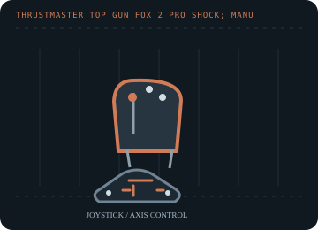

[ JOYSTICK CONTROLLERS // IDENTIFIED COMPONENT ]
Thrustmaster Top Gun Fox 2 Pro Shock
Legacy PC joystick with force-feedback shock effects, a throttle control and programmable flight-game buttons.

MODEL IDENTIFICATION: Thrustmaster Top Gun Fox 2 Pro Shock; manufacturer product numbers include 2960536, 2969058 and 2970019. Published family information does not establish the revision or condition of an individual unit; compare its label and included parts with the linked documentation.
Model specifications
| Catalog subcategory | Joystick controllers |
|---|---|
| Exact model / identifier | Thrustmaster Top Gun Fox 2 Pro Shock; manufacturer product numbers include 2960536, 2969058 and 2970019. |
| Axes and buttons | Pitch/roll stick movement, twist rudder, throttle, trigger, action buttons and POV hat. Force effects add vibration/resistance cues where the game and driver support them. |
| Physical interface | Wired USB PC game-controller interface; legacy Thrustmapper/driver configuration applies to older Windows installations. |
| Sensors and protocol | Analog stick and throttle axes with digital buttons/hat; force-feedback effects are host-commanded. The manufacturer does not specify the axis sensor element on the current support sheet. |
| Power | USB-connected force-feedback joystick; consult the original label/manual for its exact power requirements and do not substitute an unverified adapter. |
| Host OS and driver compatibility | Legacy Windows 98/Me/2000/XP drivers remain listed by Thrustmaster; a later unified package also lists Windows 7/8/10/11. A compatible game and driver are required for force effects. |
Setup and calibration
Install a matching driver before mapping controls on an older host. In the controller panel, verify axis center and full travel, then test force effects at low intensity before using in a game.
Keep the operating-system baseline calibration and in-game sensitivity/dead-zone settings separate. Record the OS, driver, firmware and game used to test each axis and button.
Preservation and service notes
Check the stick returns to center, exercise each button/hat, and inspect the USB cable and motor noise. Preserve the original driver; do not treat a working basic HID axis as proof that force feedback is supported.
For an archive specimen, photograph the model label, note all included cables/adapters and distinguish directly observed behavior from published specifications.
References and support
- Top Gun Fox 2 Pro Shock support and driver archive — ThrustmasterManufacturer product page lists product numbers and Windows-specific driver packages.
- Windows installation FAQ — ThrustmasterManufacturer-hosted legacy installation note linked from the Fox 2 Pro Shock support page.
Vendor support pages and manual downloads can change. Preserve the applicable manual and installer with a legacy host image, and verify the printed revision before service.